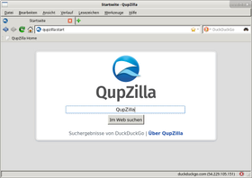
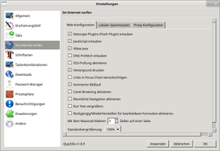

QupZilla
Dieser Artikel wurde für die folgenden Ubuntu-Versionen getestet:
Ubuntu 16.04 Xenial Xerus
Ubuntu 14.04 Trusty Tahr
Zum Verständnis dieses Artikels sind folgende Seiten hilfreich:
QupZilla  ist ein schneller, aber dennoch funktionsreicher Webbrowser, der auf WebKit und Qt basiert. Neben QupZilla bauen bspw. rekonq und Arora ebenfalls auf WebKit und Qt auf. Im Gegensatz zu rekonq basiert QupZilla jedoch ausschließlich auf Qt, hat keinerlei Abhängigkeiten von KDE und ist im Vergleich zu Arora bzgl. des Funktionsumfangs fortgeschrittener.
ist ein schneller, aber dennoch funktionsreicher Webbrowser, der auf WebKit und Qt basiert. Neben QupZilla bauen bspw. rekonq und Arora ebenfalls auf WebKit und Qt auf. Im Gegensatz zu rekonq basiert QupZilla jedoch ausschließlich auf Qt, hat keinerlei Abhängigkeiten von KDE und ist im Vergleich zu Arora bzgl. des Funktionsumfangs fortgeschrittener.
Seit 2010 ist das Programm zunächst rein zur Eigenbildung des Autors entwickelt worden. Die erste offizielle Version von QupZilla ist im November 2011 erschienen und wird seitdem stetig weiterentwickelt. Im Sommer 2017 ist beschlossen worden, das Hosting des Projekts von GitHub (siehe auch Git) in die KDE-Infrastruktur zu verlagern und es in Falkon umzubenennen. Außerdem wird Falkon der offizielle Browser des KDE-Projekts und löst damit den älteren Konqueror ab.
Einige Funktionen:
|  |
| QupZilla |
Natives Look & Feel
Integrierte Verlaufs-, Lesezeichen- und Newsfeed-Verwaltung
Integrierter Werbefilter
"Speed-Dial", Schnellwahlstartseite für neue Tabs
OpenSearch-Unterstützung
Lesezeichenimport von Opera 12.x, Firefox und Chromium/Google Chrome
Installation¶
Der Browser ist seit Ubuntu 13.10 in den offiziellen Paketquellen enthalten. Folgendes Paket muss installiert [1] werden:
qupzilla (universe)
 mit apturl
mit apturl
Paketliste zum Kopieren:
sudo apt-get install qupzilla
sudo aptitude install qupzilla
Achtung!
Das Paket liegt in universe und unterliegt in der Regel keiner Wartung, so dass die Nutzung des Browsers aus den Paketquellen schnell zu einem Sicherheitsrisiko werden kann.
Falkon via snap¶
Die neue Version des Browsers Falkon kann für Ubuntu 16.04 und neuer über ein snap-Paket bezogen werden. Dazu muss zuerst das KDE5-Framework und dann Falkon aus dem Channel "edge" installiert werden[2][3]
sudo snap install kde-frameworks-5 sudo snap install falkon --edge
Hinweis:
Das snap-Paket kde-frameworks-5 belegt etwa 210 MiB im Festspeicher.
Bedienung¶
Das Programm kann über den Eintrag "Internet -> QupZilla" gestartet werden. QupZilla ist ein sehr schlichter und schneller Browser. Sowohl die Menuleiste als auch die Statusleiste kann bei Bedarf über den Menüpunkt "Ansicht" wie aus anderen Browsern bekannt ausgeblendet werden. Wird dies genutzt, können sämtliche wichtigen Funktionen über ein ausklappbares Menu als Schaltfläche oben rechts in der Werkzeugleiste erreicht werden. Gleiches gilt für die Lesezeichen, diese können entweder über das Menu oder in der Werkzeugleiste angezeigt und aufgerufen werden.
Die Startseite und die Seite, die erscheint, sobald ein neuer Tab geöffnet wird, können beliebig konfiguriert werden. Beispielsweise kann die Schnellwahlseite ("Speed-Dial") eine leere Seite oder eine frei wählbare Seite aufrufen. Zusätzlich kann bei Bedarf eine Seitenleiste eingeblendet werden, über die die Lesezeichen ( Strg + ⇧ + B ) oder der Verlauf ( Strg + H ) angezeigt werden können.
Neben der Adressleiste befindet sich ein Suchfeld, über das die Suchmaschinen und deren Kurzbefehle verwaltet werden können. Unterstützt eine Webseite OpenSearch, kann deren Suchmaschine über das Suchfeld in den Browser integriert werden. Benötigt man das Suchfeld nicht und möchte man sämtliche Suchanfragen über die eingestellten Kurzbefehle und die Adressleiste durchführen, kann das Feld ausgeblendet werden, in dem man die Adressleiste mit der Maus an deren Ende über das Suchfeld zieht.
|  |
| Einstellungen |
Extras¶
Der Menupunkt "Extras" liefert einen schnellen Zugang zum Download- und Cookie-Manager, sowie zur Konfiguration des Werbeblockers Adblock und zum integrierten RSS-Reader. Zusätzlich kann der "Private Modus" aktiviert werden, in dem z.B. keine Einträge zum Verlauf hinzugefügt oder Cookies nicht gespeichert werden.
Einstellungen¶
Über "Bearbeiten -> Einstellungen" öffnet sich ein Konfigurationsdialog. Die Einstellungsmöglichkeiten sind in der Regel selbsterklärend. Neben Optionen zum Erscheinungsbild oder dem Verhalten der Reiter (Tabs) kann beispielsweise über "Erweiterungen -> WebKit Plugins" die Erweiterung "Click To Flash" de-/aktiviert werden, über die Flash-Inhalte manuell durch  nachgeladen werden können.
nachgeladen werden können.
Plugins¶
KParts Plugin¶
Das KParts Plugin ermöglicht die Darstellung von PDF-, Office- und anderen Dateitypen direkt in QupZilla (sowie in Chromium, Firefox und Opera) mit Hilfe der KParts-Technik. Für die Unterstützung aller Office-Dateien (doc, docx, ppt, xls, odt, ...) muss Calligra (KOffice) installiert sein. Das Plugin ist unter allen Desktop-Umgebungen nutzbar. Werden nicht KDE bzw. Kubuntu genutzt, wird allerdings ein Teil der KDE-Desktopumgebung mitinstalliert.
Das KParts Plugin kann aus den offiziellen Paketquellen installiert werden:
kpartsplugin (universe)
mit apturl
Paketliste zum Kopieren:
sudo apt-get install kpartsplugin
sudo aptitude install kpartsplugin
Links¶
Weiterführendes¶
www.qupzilla.com
– ProjektseiteQupZilla – the Best Browser You’ve Never Heard of?
– Artikel auf OMG! Ubuntu, 12/2011Internetanwendungen
 Übersichtsseite Internetanwendungen, Abschnitt Webbrowser
Übersichtsseite Internetanwendungen, Abschnitt Webbrowser
Quellen¶
Über QupZilla auf der Projektseite
QupZilla is moving under KDE and looking for new name
– Eintrag im Projekt-Blog vom 10. August 2017
- Erstellt mit Inyoka
-
 2004 – 2017 ubuntuusers.de • Einige Rechte vorbehalten
2004 – 2017 ubuntuusers.de • Einige Rechte vorbehalten
Lizenz • Kontakt • Datenschutz • Impressum • Serverstatus -
Serverhousing gespendet von